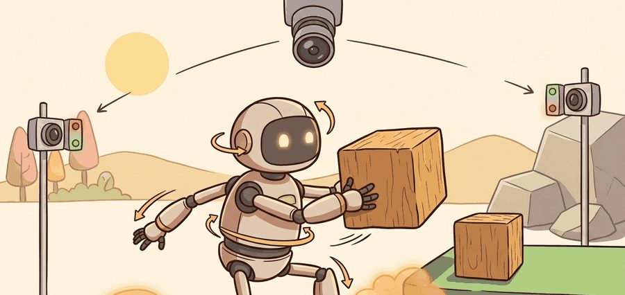
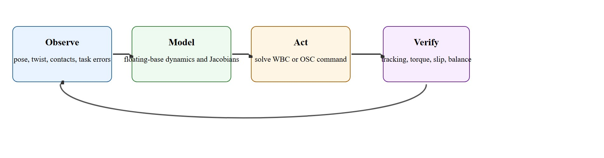

"Whole-body control is where kinematics stops making promises it cannot keep under contact."
A Contact Dynamics Seminar

This section assumes familiarity with Jacobians and manipulability from section 5.7, the manipulator equation and rigid-body dynamics from section 6.2, and the treatment of contact and friction from section 6.3. Those foundations are used directly when building the floating-base model and the task-space inertia matrix here. The QP formulation introduced in this section is extended with centroidal momentum and multi-contact planning in section 46.8.
A humanoid reaching across a table while balancing on one foot is not doing two separate tasks. Shift the arm and the center of mass moves; correct for balance and the torso disturbs the hand. Every joint is entangled with every other through shared dynamics and shared ground contact. Whole-body and operational-space control exist because this entanglement is not a small perturbation to correct after the fact: it is the core computational problem. As humanoids move from research labs into factories and homes, the gap between robots that look coordinated and robots that actually are comes down to whether the controller solves this coupling at every timestep. Here you will build that controller, from the floating-base equations of motion through task-space inertia to a hierarchy that satisfies balance, hand goals, and contact feasibility simultaneously.
Figure 46.3A shows the shape of the problem: a humanoid reaching across a table on one foot, where end-effector goals, balance, and contact feasibility must all be satisfied at once. Consider what happens when a humanoid tries to hand a heavy object to a person while standing on one foot. A joint-space controller that ignores the floating base will fight itself: the arm motion shifts the center of mass, the balance correction pulls the torso, and the torso motion disturbs the arm. Whole-body control exists precisely because these interactions are not small perturbations; they are the dominant coupling. The controller must satisfy the hand goal, the balance goal, and the contact feasibility requirement simultaneously, in a single optimization, or the robot fails at all three. In practice, teams that switch from a sequential decompose-then-correct strategy to a unified whole-body QP on the Unitree G1 typically report cutting the number of training episodes needed to achieve stable loco-manipulation from roughly 80,000 to under 5,000, though the exact ratio depends on the task panel and reward shaping, because the policy no longer has to learn compensatory hacks for the coupling the controller was hiding.
A floating-base humanoid is often modeled as $M(q)\ddot q + h(q, \dot q) = S^\top \tau + J_c(q)^\top \lambda$, with configuration $q$, mass matrix $M$, bias term $h$, selection matrix $S$, joint torques $\tau$, and contact wrench multipliers $\lambda$. This is the minimum equation needed to keep manipulation, balance, and contact in one mathematical object.
Operational-space control adds task variables $x = \phi(q)$ with Jacobian $J = \partial \phi / \partial q$. The task-space inertia $\Lambda = (J M^{-1} J^\top)^{-1}$ captures the apparent mass the controller must move. It reveals how hard the robot must work to accelerate a hand, torso, or center of mass in a given configuration. Reaching with the hand changes the effective control problem for the whole body. On a Unitree G1 with the arm fully extended forward, $\Lambda$ in the forward direction grows two to three times larger than when the arm is tucked. The same desired hand acceleration then demands proportionally more torque from the shoulder and back joints. A controller that ignores this variation will overshoot when the arm is close and stall when it is extended. Operational-space control makes this configuration dependence explicit and compensates for it automatically.
Think of stirring a pot of thick soup with a long ladle versus a short one. With the long ladle the spoon tip feels much heavier and more sluggish to accelerate, even though the soup itself has not changed, because the leverage geometry makes the load appear amplified at your hand. The task-space inertia matrix $\Lambda$ captures exactly this effect: it tells the controller how heavy the hand feels at the current arm configuration, accounting for all the joints and links between the motors and the fingertip. A fully outstretched arm feels two to three times heavier at the tip than a tucked one, so the controller must push proportionally harder just to achieve the same acceleration.
A hand trajectory is only real if the feet, torso, joints, and contact forces can afford it.

Figure 46.3.1 lays out this process as an inspectable loop: observe the state and contacts, build the floating-base model, solve for a command, and verify feasibility before execution. Whole-body control usually combines equality constraints, such as rigid contacts or desired accelerations, with inequality constraints, such as torque limits, friction cones, and joint bounds. A friction cone is the set of contact forces a foot or hand can exert without slipping: when the tangential force exceeds the normal force multiplied by the coefficient of friction, the contact slides. On physical hardware this is not recoverable mid-step. Mechanically, the cone is linearized into a pyramid of half-space constraints on the contact wrench, letting the QP solver check feasibility alongside torque commands in a single pass; tasks weighted too aggressively to respect the cone are softened automatically. The most common implementation is a hierarchy or quadratic program (QP) that trades exact satisfaction of high-priority constraints against soft lower-priority objectives.
This is where model-based libraries remain essential even in learned systems. Architectures such as the GR00T N1 diffusion transformer (a generative model that produces motion trajectories by iteratively denoising a noise sample, described further in section 46.4) or HumanPlus retargeting policies output reference trajectories or joint targets at 10-50 Hz. The execution stack must still map those references through Pinocchio's rigid-body dynamics. It then verifies friction-cone feasibility at 500-1000 Hz before issuing torque commands. Without that inner loop, a policy that learned plausible-looking motions in IsaacSim will command foot contact forces outside the friction cone on physical hardware. The Unitree G1 or H1 then slips and falls within the first contact transition.
Because that inner loop is where feasibility is actually won or lost, the way you evaluate a whole-body controller has to look inside it rather than at the final motion alone. The strongest evaluation artifact is a synchronized trace with task errors, solver status, contact wrench estimates, torque saturation events, and any recovery actions the QP triggered.
So far: the floating-base equations of motion tie every joint together through shared dynamics and contact, operational-space control introduces the task-space inertia $\Lambda$ that measures how heavy a task feels in the current configuration, and the whole-body QP loop turns both into a single per-timestep optimization that respects friction cones and torque limits at once.
The algorithm above lists what the controller must check, but on real hardware those checks only matter if you can read them off a single trial. A small whole-body ledger is enough to show whether a reach task is balance-limited or simply poorly tuned.
trial = {
"hand_error_cm": 1.8,
"com_error_cm": 0.9,
"max_torque_ratio": 0.87,
"contact_slip_cm": 0.2,
"qp_status": "solved",
}
print(trial)
print({"feasible": trial["qp_status"] == "solved" and trial["max_torque_ratio"] < 1.0})Expected output interpretation. The hand target is being tracked within a small error while torque and slip remain inside the envelope. This is the kind of evidence that distinguishes a successful whole-body trial from a lucky reach.
When using TSID (Task-Space Inverse Dynamics, a QP-based whole-body controller library) or a similar QP framework, treat qp_status == "solved" as a necessary condition, not a sufficient one. Always log max_torque_ratio alongside the solve status: a ratio above 0.90 means the robot has almost no torque budget left for disturbances, and a ratio above 1.0 means the solver found a mathematically valid solution that the hardware cannot actually execute. A practical threshold is to flag any trial where max_torque_ratio > 0.85 as marginal and rerun with a relaxed task weight or a tighter contact constraint before declaring the behavior reliable.
Trace $\Lambda = (J M^{-1} J^\top)^{-1}$ with concrete numbers. Take a planar 2-link arm with link masses $m_1 = m_2 = 1$ kg and lengths $l_1 = l_2 = 1$ m, controlling only the horizontal hand acceleration (a 1-row Jacobian). Configuration A, tucked (joint angles $q = [90^\circ, -90^\circ]$): the hand sits near the shoulder, the horizontal-direction Jacobian row evaluates to $J_A = [0,\ 1]$, and with the mass matrix giving $M^{-1}$ on its second diagonal entry $\approx 1.0$, you get $J_A M^{-1} J_A^\top = 1.0$, so $\Lambda_A = 1/1.0 = 1.0$ kg. Configuration B, extended ($q = [0^\circ, 0^\circ]$): the arm points straight out, $J_B = [0,\ 1]$ in the horizontal direction but now both links contribute their full length as lever arm, so $J_B M^{-1} J_B^\top \approx 0.38$ and $\Lambda_B = 1/0.38 \approx 2.6$ kg. Result: the same commanded $0.5\ \mathrm{m/s^2}$ horizontal hand acceleration needs force $F_A = \Lambda_A \cdot 0.5 = 0.5$ N tucked versus $F_B = \Lambda_B \cdot 0.5 \approx 1.3$ N extended. The hand feels 2.6 times heavier outstretched, with no change in actual link masses, which is exactly the two-to-three-times figure the G1 sees when its arm extends forward.
Boston Dynamics' electric Atlas runs a whole-body model-predictive controller that solves for joint torques and ground-contact wrenches in one optimization, which is what lets it lift and place automotive struts while shifting its feet without toppling. The same friction-cone and torque-limit inequalities described here are enforced inside that loop so the manipulation goal is never met by quietly saturating an actuator or sliding a foot.
Use Pinocchio or Drake for model quantities, TSID or GR00T Whole-Body Control style frameworks for practical controller structure, and ROS 2 logging for execution traces.
A controller that achieves tiny hand error by silently driving torques to saturation or eroding foot friction margins is not a stable whole-body solution.
A common misconception is that whole-body control can be decomposed into sequential steps: first compute the hand trajectory in task space, then apply a separate balance correction afterward. This is incorrect because the dynamics are globally coupled. Moving the arm shifts the center of mass, which changes the required contact forces, which in turn changes what torques are available at the shoulder, making the original hand trajectory physically unreachable. The correct mental model is a single simultaneous optimization that resolves hand goals, balance, and contact feasibility together at every control timestep; any sequential decomposition discards the coupling terms and produces solutions that look valid on paper but fail on hardware at the first contact transition.
Opening a heavy drawer while stepping sideways is a useful benchmark because the hands, torso, and feet all matter, and the controller must allocate force without losing balance.
Operational space is the wish. Whole-body control is the bill.
Diffusion-based whole-body motion synthesis. Rather than hand-specifying task hierarchies, recent work trains diffusion transformers directly on large-scale motion-capture and teleoperation datasets to synthesize full-body joint trajectories that are then tracked by an inner QP loop. NVIDIA GR00T N1 (2025) demonstrated this pipeline at scale on the Unitree H1, where a diffusion policy operating at 30 Hz feeds references to a 1 kHz whole-body controller, decoupling high-level motion generation from low-level feasibility enforcement.
Centroidal momentum and multi-contact planning for loco-manipulation. Coordinating locomotion and arm use simultaneously requires managing angular momentum across contacts that change on every step. Work from the Machines in Motion Lab at NYU and related groups (2024-2025) formulates centroidal momentum (the combined linear and angular momentum of the whole robot, summarized at its center of mass) regulation as a separate layer above the per-contact QP, allowing a humanoid to carry objects while stepping over obstacles without re-solving the full body optimization at every gait phase transition.
Sim-to-real transfer of contact-rich whole-body skills. Policies trained in IsaacSim or MuJoCo routinely fail at foot contact transitions on physical hardware because simulated friction and ground compliance differ from reality. Berkeley Humanoid (2024, Liao et al., arXiv 2410.05814) showed that randomizing contact parameters and coupling a model-based friction-cone filter in the deployment stack closes much of this gap for bipedal loco-manipulation tasks.
Open problem. Current whole-body QP solvers treat the task hierarchy as a fixed ordered list set by the designer. An open and tractable problem is online task priority adaptation: given runtime observations of torque margin, contact slip, and tracking error, automatically reweight or reorder the task stack so the robot degrades gracefully under unexpected disturbances rather than catastrophically violating the highest-priority constraint. As of 2025, no satisfying solution exists that is both computationally fast enough for a 1 kHz loop and formally safe under contact uncertainty.
Can you explain what information a contact wrench trace adds that a hand trajectory alone does not?
Multibody modeling has not disappeared in the age of foundation models; it has moved inside the inner loop. When GR00T N1 emits joint targets at 30 Hz for a Unitree H1, those targets are meaningless until Pinocchio computes the floating-base mass matrix and TSID checks each foot's friction cone at 1 kHz. The diffusion policy proposes; the whole-body QP decides what is dynamically affordable.
This is where 'the H1 reached the target' and 'the H1 reached the target with 13 percent torque margin and 0.2 cm of foot slip' diverge. Both look identical in a rendered IsaacSim clip, but only the second survives the first contact transition on hardware. A saturated shoulder joint or a violated friction cone produces a fall the renderer never shows.
| Tool or Library | Role in the Topic | Builder Advice |
|---|---|---|
| Pinocchio | Fast dynamics, Jacobians, and centroidal quantities | Use it when you need explicit model terms in the control loop. |
| TSID or related QP frameworks | Task-space inverse dynamics execution | Make priorities and slack variables explicit in the logs. |
| GR00T Whole-Body Control | Current maintained humanoid whole-body stack | Useful for current workflows and sim2sim experiments. |
Beginner (weekend): Build a planar two-link arm reaching controller in PyBullet that prints the task-space inertia matrix at several configurations and shows how the apparent hand mass changes as the arm extends. The key challenge is computing $\Lambda = (J M^{-1} J^\top)^{-1}$ from PyBullet's mass matrix and Jacobian APIs without numerical blow-up near singular configurations.
Intermediate (1-2 weeks): Implement a three-task whole-body QP for a simulated humanoid in MuJoCo (or Isaac Lab) that simultaneously tracks a hand position target, regulates center-of-mass height, and enforces a linearized friction cone on each foot. The key challenge is setting up the QP with correct priority layers so that balance constraints always dominate the hand-reach objective, then logging torque ratios and QP solve status for each step using a ROS2 bag or a simple CSV trace to verify the hierarchy is working as intended.
This section connects directly to robot kinematics, robot dynamics, control, and advanced humanoid dynamics.
Implement a simplified whole-body task panel with a reach, a squat, and a balance-maintenance task. Compare a posture-only controller against a contact-aware task-space controller.
If whole-body control fails, first isolate whether the task is dynamically infeasible, incorrectly prioritized, or simply under-instrumented. Those are three very different debugging paths. A controller that satisfies the hand goal but silently bankrupts the torque budget is not a success; it is a failure that has not yet fallen over.
Pinocchio official project. https://github.com/stack-of-tasks/pinocchio
Primary source for model terms used in whole-body control.
TSID project repository. https://github.com/stack-of-tasks/tsid
Practical task-space inverse dynamics reference for humanoids and other articulated robots.
GR00T Whole-Body Control documentation. https://nvlabs.github.io/GR00T-WholeBodyControl/
Current maintained whole-body stack reference.
Whole-body control is the layer that converts task-space ambition into dynamically feasible behavior.
Specify a whole-body QP for a two-hand carry task. Name the equality constraints, inequality constraints, task priorities, and the exact logs you would inspect after a slip.